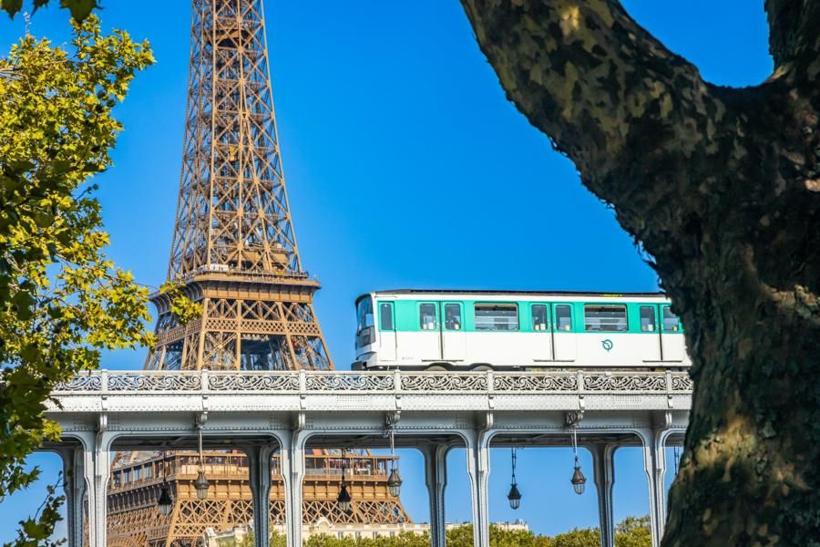

Pařížské metro
Pařížské metro je jedním z nejstarších a nejefektivnějších systémů veřejné dopravy na světě, které pokrývá téměř celé město. Provoz metra byl zahájen již v roce 1900, což svědčí o jeho dlouhé a bohaté historii fungování. Dnes metro tvoří síť 16 linek, které jsou doplněny regionálními vlaky RER, pro cesty do vzdálenějších předměstí.
Cestování metrem je obvykle nejrychlejším způsobem, jak se vyhnout častým dopravním zácpám, které trápí silnice Paříže. Kromě metra a RER fungují v Paříži i autobusy a tramvaje, které slouží pro krátké přesuny a cesty po povrchu. Jízda na kole se stává stále populárnější, a město nabízí rozsáhlý systém sdílených kol Velib' s mnoha stanovišti. Dopravní síť je komplexní a pro nového návštěvníka může být zpočátku matoucí, ale rychle si na ni zvykne.
Rychlé prokliky
- Oficiální stránky pařížské dopravy (RATP)
- Kam si zajít na jídlo po výletu metrem?
- Aktuální doprava v Paříži
Nejvýznamnější linky pro turisty
- Linka 1: Většina památek (Louvre, Vítězný oblouk)
- Linka 6: Jede nad zemí a má výhled na Eiffelovku
- RER C: Doprava k Versailles a Eiffelovce
Foto
